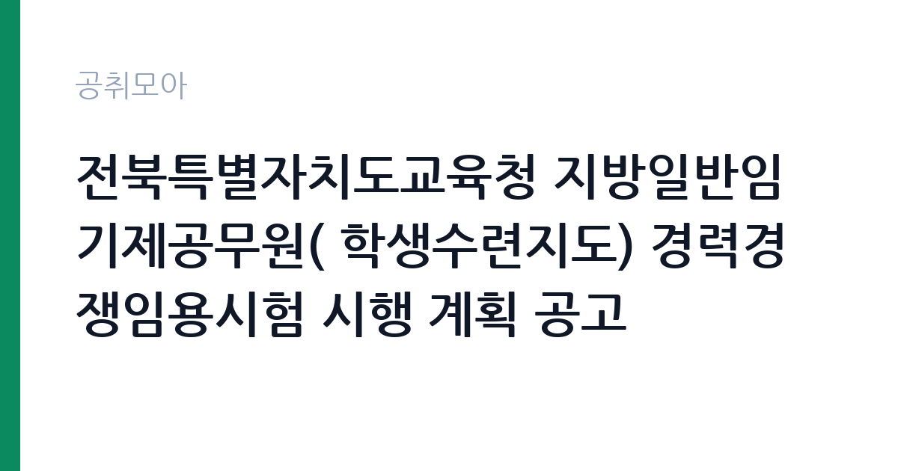

[교육청] 전북특별자치도교육청 지방일반임기제공무원( 학생수련지도) 경력경쟁임용시험 시행 계획 공고
전북특별자치도교육청 · 전북 · 마감 2026-10-02 (D-10) · 출처 나라일터

한눈에 보는 모집 조건
| 기관 | 전북특별자치도교육청 |
|---|---|
| 공고명 | 전북특별자치도교육청 지방일반임기제공무원( 학생수련지도) 경력경쟁임용시험 시행 계획 공고 |
| 고용형태 | 임기제 |
| 근무지 | 전북 |
| 게시일 | 2026-09-22 |
| 마감일 | 2026-10-02 (D-10) |
지원자격, 이렇게 읽으세요
- 지방교육행정8급 1명
- 접수 ~2026-10-02 마감
- 세부 조건은 원문 공고문 확인
임용 직급은 지방교육행정 8급 상당의 일반임기제로, 학생수련지도 분야의 경력과 자격을 요구합니다. 세부 자격요건은 첨부된 공고문에서 확인하셔야 하며, 청소년지도사 자격이나 수련시설 근무 경력이 핵심이 될 가능성이 큽니다. 지방공무원 임용이므로 결격사유와 거주지 요건 등의 조건도 함께 살펴보시기 바랍니다. 접수 기간이 3일에 불과하므로 증빙서류를 미리 준비하시기 바랍니다.
이 공고의 포인트
첫 번째 포인트는 학생수련지도라는 특화 직무라는 점입니다. 청소년 수련과 체험교육 경력을 가진 분에게는 경쟁자가 적은 분야일 수 있습니다. 두 번째로 교육청 소속 지방공무원 신분으로 임용되어 교육행정 현장에서 일하게 됩니다. 세 번째로 접수 기간이 단 3일이라 준비된 지원자에게 유리한 구조입니다. 전북 지역에서 청소년 교육에 뜻이 있는 분께 적합한 공고입니다.
전형은 어떻게 진행되나
전형은 경력경쟁임용시험으로 서류전형과 면접시험을 거쳐 선발합니다. 응시원서 제출은 2026년 9월 30일부터 10월 2일까지이며, 제출 방법과 접수처는 첨부 공고문에서 확인하시기 바랍니다. 접수 기간이 짧으므로 연휴 전에 서류를 완성해 두시기 바랍니다. 면접에서는 학생지도 경험과 위기 대응 능력을 직접 질문받을 가능성이 큽니다.
원문에서 확인한 전형 방식
전북특별자치도교육청지방공무원인사위원회 공고 제2026-343호 전북특별자치도교육청 지방일반임기제공무원 경력경쟁임용시험 시행 계획 공고 전북특별자치도교육청의 「지방일반임기제공무원경력경쟁임용시험」을 아래와 같이 공고하오니 많은 지원 바랍니다. 1. 임용직급(분야) 및 인원 - (8급) 학생수련지도 1명 2. 응시원서 제출: 2026. 9. 30.(수) ~ 2026. 10. 2.(금) 3. 기타 자세한 사항은 첨부된 공고문을 참고하시기 바랍니다.
이런 분께 추천해요
- 청소년지도와 학생수련 분야 경력이 있으신 분
- 전북 지역 교육청 소속으로 근무하고 싶으신 분
- 체험활동과 인성교육을 통해 청소년과 함께하고 싶으신 분
지원 전 체크리스트
- 학생수련지도 분야의 자격·경력 요건을 첨부 공고문에서 확인했습니다
- 응시원서 제출 기간 3일(9월 30일~10월 2일)에 맞춰 서류를 준비했습니다
- 지방공무원 결격사유에 해당하지 않음을 확인했습니다
- 제출 방법과 접수처를 공고문에서 확인했습니다
모집 일정과 제출 타이밍
응시원서 제출은 2026년 9월 30일부터 10월 2일까지입니다. 추석 연휴 직후이므로 연휴 전에 모든 서류를 준비해 두시기 바랍니다. 서류전형 합격자 발표와 면접 일정은 교육청 안내에 따르시기 바랍니다. 면접 준비를 위해 학생수련 프로그램의 사례를 미리 정리해 두시기 바랍니다.
직무 이해하기: 교육청
학생수련지도 공무원은 학생수련원과 수련시설에서 학생들의 체험활동과 수련 프로그램을 기획하고 운영합니다. 안전 관리와 인성지도, 단체활동 진행이 핵심 업무이며, 학교와 연계한 교육과정을 지원합니다. 전북특별자치도교육청 소속으로 전북 지역 수련시설에서 근무하게 됩니다. 교육청 카테고리 공고입니다.
자기소개서 작성 팁
응시서류에서는 청소년지도와 수련활동 운영 경험을 구체적으로 기술하시기 바랍니다. 진행했던 프로그램의 규모와 본인의 역할, 학생들의 변화를 사례와 함께 제시하면 좋습니다. 학생 안전에 대한 책임감과 교육 철학을 진정성 있게 서술하시기 바랍니다.
면접 준비 포인트
면접에서는 수련활동 중 응급상황 대처와 문제행동 지도 경험을 질문받을 가능성이 큽니다. 실제 사례를 중심으로 답변을 준비하시기 바랍니다. 단체생활 지도에 대한 본인의 원칙을 명확히 밝히시고, 임기제 근무에 대한 수용 의사도 함께 전달하시기 바랍니다.
급여·근무조건 읽는 법
보수 수준은 원문 공고문에서 확인하셔야 합니다. 지방일반임기제공무원의 봉급은 지방공무원보수규정에 따른 연봉제가 적용되며, 8급 상당의 연봉 한도 내에서 경력을 고려해 책정됩니다. 정확한 금액과 수당 구성은 원문의 보수 조건에서 확인하시기 바랍니다. 실수령액은 세금과 공제 후 금액임을 참고하시기 바랍니다.
자주 묻는 질문
- 학생수련지도는 어떤 일을 합니까
학생수련원에서 체험활동과 수련 프로그램을 기획·운영하고 학생들의 안전과 인성지도를 맡는 직무입니다. 세부 업무는 첨부 공고문과 직무기술서에서 확인하시기 바랍니다. - 접수 기간이 얼마나 됩니까
2026년 9월 30일부터 10월 2일까지 단 3일입니다. 제출 방법과 접수처를 미리 확인하시고 서둘러 준비하시기 바랍니다. - 임기제 공무원의 신분은 어떻습니까
기간을 정해 임용되는 공무원으로, 해당 분야의 전문성을 중심으로 선발됩니다. 임기와 연장 조건은 원문에서 확인하시기 바랍니다.
함께 보면 좋은 공고
[교육청] 경상남도교육청 지방임기제공무원(8급) 공개모집 공고 — 마감 2026-10-08[교육청] 휘문중학교 교육공무직원(미화원) 초단시간근로자 채용 공고 — 마감 2026-09-29[교육청] 인천운서중학교 특수교육대상학생 보조인력(자원봉사자) 모집 공고 — 마감 2026-09-28출처: 나라일터 공개정보를 바탕으로 공취모아가 정리한 안내글입니다. 모집 조건·일정은 변경될 수 있으니 지원 전 반드시 원문 공고문을 확인하세요. 본 글은 정보 제공용이며 합격을 보장하지 않습니다.